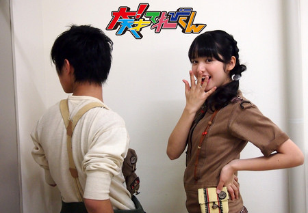

2014年03月27日 (木)【お知らせとご挨拶】大天才テレビジョン会長
皆様、こんにちは。大天才テレビジョン会長です。
今日はちょっと残念なお知らせがあります。
大天才テレビジョンはネオ渋谷区から「大！天才てれびくん」を放送していますが、この度、私たちの放送電波は「ネオ」のつかない世界に届かなくなってしまいました。
私は早速、大天才テレビジョン放送技術研究所略して大放研のふかわ主任に調査を命じました。ところが、「きっと星のめぐりがよくないのでしょうね。何か都合悪かったですか？」などと科学者とも思えぬとんちんかんなことを言っているばかりで、原因は不明です。
行方をくらましたままの編成局長、あるいは会社を逆恨みしている何とか大魔王が懲りずに何かたくらんでいるのかも知れませんが、確実な情報は何もありません。
これまで3年間、出川哲朗特命プロデューサーとてれび戦士たちは、長寿番組のよさを生かしながらもまったく新しい「天才てれびくん」を創り出そうと、「大！天才てれびくん」の制作に取り組んできました。
「天才てれびくんタロウ」の方が好きだったとか、「タロウ」に戻してほしいというご意見も数多くいただきましたが、出川Pは自らの信念たる「出川イズム」を揺るがせることなく、不器用ながらもまっすぐ真剣に邁進しました。これまでとはまた別の形で皆様に愛していただける番組となったのではないかと思います。
「天才てれびくん」シリーズは、常に新しいことに挑戦し続けることを運命づけられた番組です。全放送清く正しく美しく好感度向上委員会略して全放向のような団体や、時折来訪する謎のUFOや怪人物たちのちょっかいに負けることなく、てれび戦士たちは魅力的で新しい豊かな放送番組を今後も創造していくことでしょう。
ネオのつかない世界の皆様。電波は途切れてしまいましたが、いつかまたお会いできる日が来るかもしれません。そのときはまた、あたたかい応援をお願いします。
ああ、そろそろネオのつかないインターネットへの接続も切れそうです。
おなごり惜しいですが、このあたりで一旦お別れです。
テレビって本当にいいものですね。サヨナラ、サヨナラ、サヨナラ。
2014年3月27日
第19代 大天才テレビジョン 会長

追伸：ネオのつかない渋谷区にあるNHKという放送局が、3月31日から「Let’s天才てれびくん」という番組をどうやら始めるみたいですよ。こちらもまた別の魅力を持つ、新しい「天才てれびくん」だと思います。大天才テレビジョンの番組ではありませんが、よかったら観てあげてくださいね。
投稿者:大天才テレビジョン社員１号 | 投稿時間:19時00分 | カテゴリ：お知らせ！ | 固定リンク


 " title="ソーシャルブックマークについて">
" title="ソーシャルブックマークについて">
※NHKサイトを離れます。
2014年03月25日 (火)【私と「大！天才てれびくん」】出川哲朗
★私と「大！天才てれびくん」★
本当に楽しい3年間だった
あきえちゃんと22人のてれび戦士
みんなで、たくさん笑ってたくさん泣いた
みんなで、ご飯も食べに行った
みんなで、ボスの家にも遊びに来た
みんなに、本気で怒った
本当に素晴らしいチームだった
この22人のてれび戦士に出会えたことを、誇りに思う
そして、俺はこれからもこのてれび戦士を見守り続ける
3年間、大！天才てれびくんを応援してくれてありがとう
2011年


2012年


2013年


投稿者:出川哲朗 | 投稿時間:18時00分 | カテゴリ：We are 大天才テレビジョン | 固定リンク
" title="ソーシャルブックマークについて">
※NHKサイトを離れます。
2014年03月24日 (月)【私と「大！天才てれびくん」】鈴木あきえ
★私と「大！天才てれびくん」★
「大！天才てれびくん」を暖かく見守って下さったみなさま、
今までどうもありがとうございました☆
私も小学生の頃は、根っからの天才てれびくんっ子だったので、
大！天のお仕事をさせていただけるのが決まったとき
飛び上がるほど嬉しかったのを覚えています(^^)
それに、子供番組をするとぃうのが夢の1つだったので
自分でも信じられないくらいの喜びでした♪♪
しかし、最初の収録では
何故かみんなで海辺を走ったり、
東京タワーに登って番宣をしたり、
一体これは何なんだろう？とぃう疑問がたくさんありました（笑）
そう！
それが出川イズムだったのです！！！
どんなことでも、例え意味がないことでも、何事も全力でやる！！！
出川イズムは、私のこれからの人生にも大きな影響を与えてくれました♪
てれび戦士たちといると、いつもいつも楽しくて、
時には辛いスケジュールのときも、みんながいたから頑張れる自分がいました☆
彼らはまだ学生だけど、
本当にプロだなと感心させられたことも何度もありました！
26歳の私の方が子供だなと反省したこともしばしばΣ ゜ロ゜≡( ノ)ノ
彼らは本当に、最高の私の自慢の仲間です♪
ボスやてれび戦士、大！天スタッフのみんなと出逢えて
何事も全力で楽しんでやることの大切さを知りました(^^)
みんな、どうもありがとう♪
ここまで、歳の離れたマブダチができるとは思っていなかったけど（笑）、
人生の中で最高の3年間だったし、
一生忘れない、キラキラした日々でした☆
みんなとは、大人になったら一緒にお酒を飲みに行く約束をしてます(^^)
あ、そのとき、まだ私が独身だったら、しっかり合コンも一緒に行かないと♪♪笑
『大！天才てれびくん』メンバー☆
そして
『大！天才てれびくん』を愛してくれたみなさま☆
心の底からありがとうございました♪♪♪
2011年
2012年


2013年


投稿者:鈴木あきえ | 投稿時間:18時00分 | カテゴリ：We are 大天才テレビジョン | 固定リンク
" title="ソーシャルブックマークについて">
※NHKサイトを離れます。
2014年03月23日 (日)【私と「大！天才てれびくん」】古坂大魔王
★ワルがワルしてワルするワルと「大！天才てれびくん！」★
ぐわははは！お前の布団の中に竜田揚げ置いてやる！
どうも！フダケリワルズ監督古坂大魔王だ！
なに？…終わる？なに？大！天才てれびくん…終わる？
なんだとぉ((((；゜Д゜)))))))！
この三年間の感想…ふむ、まあよい！述べようではないか！
…最初は札式蹴り野球のコーナーだったな…。
太一が最初のてれび戦士との出会いだったか。まだ、小さかったな。
そこから朱里が出て来てぶっ飛び具合に度肝を抜かれ、そこに鎮西娘が現れる。此奴の明るいポップな馬鹿さ加減の半端ないこと！
ここで思ったわな。
「このガキども…なに振っても返して来やがる！…なるほど出来る奴らだ！」
これが最初の印象だ。
すげー事だぞ。俺なんかこの年の頃はハナクソほじってフィギュアでプロレス遊びに没頭しかしてない年頃…ドンドン前へ出てバシバシ返して来やがる！
そしてダメトークが始まり他のてれび戦士達と出会う。
なんだなんだ？
厳しくトークを進めても着実にしかもとんでもない早い進化で俺に突進して来る！ワルラジではもっともっと進化した！
更に特筆すべきはハガレルメッキこと金子！
お前は…ま サッカー以外はことごとく使えなかった！
しかし…見てみろ！試合ごとに声が大きくなり相手を怯ませる！
立派にリーダーとして成長し、戦士達をまとめ上げた！最後の生放送のワルワルワールズ歌唱時のシャウトは見事であったぞ！
他にもてれび戦士達、1人1人に言いたいことは山程ある。
本当にある。思いもある！紛れも無くある！
しかしまあ、俺は直に伝えて来た筈だから、それは各々が感じてくれれば良いとして…
言い古された言葉だが
「出会いと別れは繰り返し」
人間産まれたからには死ぬ。
そのことと同じように出会いとは別れの始まり。別れとは出会いの始まり。
その、次の出会いへと別れを糧に大きくなり…沢山の人に勇気や希望を与えれる大人へと変わって行ければ良いのだ！！
そして！そしてだ！これも知っておくが良い！
正義と悪は裏と表！
何が正義でワルなのか？
誰も知らない筈だ！
そのこともこの世界の理だ！心に記しておけ！
さあ、てれび戦士達よ！！
次のステップへと進む時間だ！
時は限られている！
その限られた時を縦横無尽に駆け巡り、人生の大銀河を飛び回れ！
そして、最後にこの言葉で君達を送ろう…。
…って、うっせー！バーカ！
そんな事これっぽっちも思ってねー！！
でっかくなって街で会っても知らんぷりしてやる！
飯食わせて笑顔で知らんぷりしてやるからな！
ざまぁみろ！
がはははははは…
せーの…
ワルワルガオψ(｀∇´)ψ！！！
2011年


2012年


2013年


投稿者:古坂大魔王 | 投稿時間:18時00分 | カテゴリ：We are 大天才テレビジョン | 固定リンク
" title="ソーシャルブックマークについて">
※NHKサイトを離れます。
2014年03月22日 (土)【私と「大！天才てれびくん」】木島杏奈
★私と「大！天才てれびくん」★
「大！天才てれびくん」をいつも見てくださっているみなさん！
こんにちは！！
木島杏奈です^^
私は2011年度てれび戦士として、
1年間ボスとアッキーのもとで、出川イズムを学んできました！！
初めは訳が分からず、部屋に連れられたら、
綺麗なお姉さん（アッキー）が居て、
そしたら、いきなり壁を破って出てくるお兄さん（ボス）。。
初めは理解するのに時間がかかりました！^^
たくさんいろいろな事をして、全力で正面からぶつかり、でもいつも空振りで時々ヒットする！
そんな毎日を、大！天メンバーで過ごして、いつの間にかたくさんの力が身につきました！
一番の思い出は、最後にした大縄跳びです！
最後に、みんなが1つになって挑戦した、この企画。
やってる時は、みんなで飛びきることだけを考えて、励まし合って挑戦した。
成功はできなかったけど、みんなで助け合って挑戦できたことがすごいこと！！
それもまた学びました！！
そんな毎日を一緒に過ごしてきた、てれび戦士のみんな！
初めて会う時は、みんなぎこちなくて、
きっとそんな空気をとりたくて、
私が、初めてみんなに喋った言葉は
"タメ口でいいよ！"
みんなのリアクションは
"あ。はぁー。。？"
ポカ〜んとしてました^^
きっと変な人だなって思われてたかもしれないです！
でも、次の日には、みんな何十年も一緒に居たかのように仲が良くてハシャギ合って。。♪♪
今では、お互い励まし合って一緒に成長する。
みんなで第2の学校だね！っていってたよね。
でも私は、第2の家族だと心から思います（＾−＾）
そんな私たちを、いつもまとめてくださったアッキーは、
いつもみんなの遊びに全力で一緒に居てくれて、私の憧れのお姉さんです！（←アッキーには言ってないんですけど^^）
実はよく、アッキーと寿々歌と朱里と当時中学生だった私でガールズトークもしてたんですよ♪♪
時々、ボスも入ってきましたが笑
そんなボスは1番心の熱い人！
ボスに何事にも全力で、ポジティブになる心を教えてもらいました！
撮影でも、プライベートでもとても優しい方です！
そして、いままで「大！天才てれびくん」を見てくださってきたみなさん。
本当にありがとうございました！
テレビを通して何か伝わるものがあれば、私は嬉しいです！！
「大！天才てれびくん」で過ごした日々は私の宝物です！
大！天ファミリー大好きです！！！^^
2011年


2013年


投稿者:木島杏奈 | 投稿時間:18時00分 | カテゴリ：We are 大天才テレビジョン | 固定リンク
" title="ソーシャルブックマークについて">
※NHKサイトを離れます。
2014年03月21日 (金)【私と「大！天才てれびくん」】矢部昌暉
★私と「大！天才てれびくん」★
どーも！
矢部昌暉です！！
みなさんお久しぶりー♪
久しぶりに、天てれに戻ってきました！
僕が天てれを卒業して、もうすぐ2年が経とうとしています・・・
なんか、時間の流れが早いなー笑
僕は今DISH//というグループで頑張っていますが、
今の僕があるのは、全部天てれのお陰です！！
天てれで、普段できない経験をさせてもらい、
色んな事にチャレンジできたからこそ今があります！
そして何より、他のてれび戦士や共演者の方々との1日1日が、
すごく楽しくてとても大切な思い出です！
まるで家族のように、みんな仲良くてすごい絆で結ばれてます！
みんなで力を合わせて頑張ってきた日々を思い出すと、
どんなにつらいことがあっても乗り越えられるんです♪
今回の撮影で、現てれび戦士のメンバーとは、
ほとんどが初めて会う子たちだったんですけど、
すぐに仲良くなって撮影中も、わちゃわちゃうるさいわけで、笑
それがまた楽しくて、当時の事を思い出しましたね、笑
できることなら、あの頃に戻りたいよ…笑
と、まぁ、何回も書きますが
てれび戦士との出会いや、天てれでの出来事が、今の僕の力の源です！
これから先、僕は自分の決めた道を突き進んでいきます！
でも、天てれでの思い出は、この先忘れることは絶対にないでしょう！
天てれや応援してくれる方々を胸に、これからも頑張っていこうと思います！
最後まで見ていただきありがとうございます！
それではこの辺で。
天てれ最高！！！！
2011年
2013年


投稿者:矢部昌暉 | 投稿時間:18時00分 | カテゴリ：We are 大天才テレビジョン | 固定リンク
" title="ソーシャルブックマークについて">
※NHKサイトを離れます。
2014年03月20日 (木)【私と「大！天才てれびくん」】浅賀玲音
★私と「大！天才てれびくん」★
こんにちは！浅賀玲音です。
2011年度から2012年度まで、てれび戦士をやらせていただきました。
天才てれびくんは小さい時からずっとテレビの前で、
憧れのまなざしで見ていた番組だったので
まさか自分がてれび戦士になるなんて夢にも思っていませんでした。
初めの頃は緊張して、何がなんだかわからないうちに収録が終わっていたり（笑）
みんなと打ち解けるのに必死だったり、
収録でうまくいかないことがあったりと、
とにかく慣れるのに必死だった覚えがあります。
その中でも、憧れのMTKをソロでできた時には、最高に嬉しかったです！
そんな風に1年が過ぎて、2年目に入り、
今度は自分が新しいてれび戦士たちの先輩という立場になることに、ワクワクしながらも、とても不安でした。
けれど、2年目は全体が打ち解けるのが本当に早くて、
かなり最初からみんなと濃く絡むことができて嬉しかったです！
あとはやっぱり同い年の崚行、寿々歌、朱里の存在が
めちゃくちゃ大きかったかなぁーという気がします。
3人がいたから、ここまで頑張れたって言っても過言ではないです！
とにかくこの番組での出逢いは、一生ものだと思いました。
全ての出逢いが自分にとって刺激的で、大切で。
出川さん、
あきえさん、
てれび戦士のみんなに、
そして、
「大！天才てれびくん」に出逢えて、本当に良かったです！
2011年
2012年

2013年


投稿者:浅賀玲音 | 投稿時間:18時00分 | カテゴリ：We are 大天才テレビジョン | 固定リンク
" title="ソーシャルブックマークについて">
※NHKサイトを離れます。
2014年03月19日 (水)【私と「大！天才てれびくん」】鎮西寿々歌
★私と「大！天才てれびくん」★
みなさん！お久しぶりです！
初めましての方もいるのかな？
改めまして…
西の国支局の鎮西寿々歌です（笑）
「大！天才てれびくん」が始まった時、私は中学1年生でした！
あれからもう3年近く経っているんだ〜早いなぁ〜
一番初め、ボスが紙を破って私達の前に現れた時…
「あ〜テレビでよく見る出川さんだ〜」なんて思っていました。
この時は、まさか、こんなにも滑舌が悪いとは思ってなかったです（笑）
私がてれび戦士になってから、1番心に残っている「出川イズム」は、「ドミノ」です！！
（大！天才てれびくんが始まった1年目に、てれび戦士が4人呼び出されて、
大量のドミノを完成させる！という挑戦をしたんです！）
なぜか分からないけど、私は2回中、2回とも呼ばれました。。
1回目の時はまだ大丈夫だったけど、、
2回目！！！
あの時は、ただただ長時間、長方形の板を並べ続けていました（笑）
そうだ！！！！
私、皆さんに言いたいことがあったんです！！！
私と杏奈が作業中にコーヒーを飲んでいたの覚えていますか？！
（私と杏奈という、ズボラと呼ばれた2人が、みんながドミノを並べている間にコーヒーを飲んでいたんですね）
あの時は、本当にたまたまなんです！！
休憩です！休憩！
短い休憩の瞬間を、たまたまカメラがとらえた！んです！
これを言わないとと、ずっと思っていて、やっとお伝えする時がきたのでよかったです（ホッ…）
でもこのブログ、
ボスが見たら、また言われるので、この辺で終わりにします。笑
とにかく…
私は大！天才てれびんくんのてれび戦士として、12(13)人、の中に選ばれたことにすごく感謝しています。
普通ではできない、いろんな経験ができました。
またいつか、メンバー揃って、皆さんに会えることがあったらいいな。。
そのために、私も頑張ります！！
今まで大！天才てれびんくんを見てきてくださった皆さん！
ありがとうございました！！！
最後に…
スパッツタイツレギンスー！
（私のよくウケたギャグです。）
2011年
2012年


2013年

投稿者:鎮西寿々歌 | 投稿時間:18時00分 | カテゴリ：We are 大天才テレビジョン | 固定リンク
" title="ソーシャルブックマークについて">
※NHKサイトを離れます。
2014年03月18日 (火)【私と「大！天才てれびくん」】寺田朱里
★私と「大！天才てれびくん」★
「大！天才てれびくん」！
大好きです！
愛してます！
あいらびゅー。
まずは、司会者さんとかもわからない状態で収録を行いましたね〜
最初に、あっきーを見たときは、
あれ！ついにアナウンサー来たか！とか思って、少し興奮しました。
でも話していくうちに、
なんだ、この面白くてやさしすぎる人は！って、もっと興奮しました。笑
そして出川さんが、紙をバリバリ〜ってやってでてきたときは、びっくりしました。
それを見て、この人、変な人なんだな〜とか、お母さん、お姉ちゃんだったかな？と話していたからです。
でも、打ち解けていくいちに、出川さんと、たくさん笑ったりしましたね〜
やっぱり、変わった人でしたね。
でも、世界一やさしい司会者ですよ。ボスとあっきー！
そして、てれび戦士！
2011年度のみんなは、楽屋に入ったとたん、動物園か！ってくらいうるさくて。笑
打ちとけるの、はやっ！ってびっくりしました。
そして、なにより太一と勝から、目が離せませんでした。
えんめいちゃんは、おちゃめで、大人っぽいところもあって、よく追いかけっこしたね。笑
すごく楽しかったです！
ホセ！もう、ほんとにツボです。笑
よく、しりとりしたの覚えてるかな？
大切な思い出です。
ゆい！
ゆいとは、ほんとーにいっぱい色んなことしたよね！
誰よりも周りのことをみて、すごく思いやりがあるなって思いました。
でも、おちゃめなので、とてもかわいいです。笑
勝！勝くん、よく私のスマートフォンで、遊んでましたね〜笑。
おじいちゃんとかよんでいたけれど、やっぱりやさしくておだやかなおじいちゃんです。
太一！めちゃくちゃかわいがりました。笑
追いかけまわしてごめん。でも大好きです。
さびあ！とにかく活発ですね！お人形ごっことかしたね。笑
楽しかったです。
あんな！天然でぬけてるところがあって、おもしろくてやさしいギャップ、萌え〜（ハート）
大好きです。お世話になりました。
やべっちは、ギャグ線たかい！身長も高い！
何もかも、ビッグです！たくさん迷惑をかけました。
しゅんや、シャイでからかうとすぐ赤くなる。
なのに、人をからかうときも、なぜか、恥ずかしそう。笑
ニイナ！しっかりしていて、天然。笑
そんなニイナが大好きです
ソーズビー！あなたも私のツボです。笑
面白すぎます。笑
つかぽん、やさしい一面がありますね。
面白さも、肌のきれいさも、誰にも負けないね、笑。
みれな！
小顔で、目がおっきくて！お人形さんみたいやわ！
でも、すこしガサツなところがありました、笑。
とうこ！全く心がよめません、笑、ミステリアス！
でも、すごくやさしいよね。
短い間だったけど、気さくに話かけてくれた2013年度のみんな。
ありがとう！
古坂さんや、辻さん、ワルドーナや、悪正、
ふかわさん、会長さん、スタッフさん、我修院さん、
山本さん、チャンさん、馬場園さん、武田さん、
鈴木史朗さんや、ゲストで来てくださったみなさま、
たくさんの笑いや、やさしさをありがとうございます！
そして、最後に、ちゅーにーず。
一番、迷惑かけたし、お世話になりました！
たぶん、これからも縁が切れることはないと思います。
癒されたいなと思ったら、連絡するから、そのときはよろしく！笑
なんか、思い返してみると、
無駄なことなんて一つもなくて、ひとつひとつが大切な思い出です。
ファンの皆様との交流も、大きな大きな力となりました。
とにかく、みなさんに、ありがとうが伝えたいです。
ありがとう！
皆！また、どこかで会おう！
あかり
2011年
2012年
2013年


投稿者:寺田朱里 | 投稿時間:18時00分 | カテゴリ：We are 大天才テレビジョン | 固定リンク
" title="ソーシャルブックマークについて">
※NHKサイトを離れます。
2014年03月17日 (月)【私と「大！天才てれびくん」】長江崚行
★私と「大！天才てれびくん」★
お久しぶりです、長江崚行です。
こうやって、大天ブログを更新するのも、1年ぶりなんですね…。
とても懐かしい。笑
僕は、4年間『天才てれびくん』シリーズに出演させていただいて、
『大！天才てれびくん』には、2年間出演させていただきました！
卒業後も、この前のバラエティコーナーやドラマコーナーのように、
出演させていただけて、本当に嬉しかったです。
よし、そろそろ敬語やめます。笑
久々すぎて、妙にかしこまっちゃう。笑
この前のバラエティコーナー、久々みんなに会えて嬉しかったなー…
大して活躍もしなかったけど…笑
武井壮さんとのパネルを打ち抜く対決の時なんで、
助っ人にきた昌暉・玲音・俺で、
『ノーコンだよ…やばいよ…わざわざ呼んでもらったのに…笑』
って、ずっと話してた。
ええ、言い訳みたいだよね。
言い訳ですよ。笑
ま、楽しんでたしいいよね！笑
あと、ちゅーにーずが、久しぶりに揃ったんだ！
卒業後、初かな。4人が揃うのは。
楽屋で、4人で話したりしてると、すごく懐かしくて…。
一生、こんな関係が続けばいいなって思った。
笑い話もしたし、真面目な話もしたよ。
今回みんなに会えたことは、これからも頑張れる動力源になった気がする。
卒業して一年が経ちました。
僕は、僕の道を駆け抜けています。
これから先、皆が駆ける道と交わるように、頑張ろっと！
それでは、長江、失礼しますね。
これからも、よろしくお願いします！！
長江崚行より
2011年

2012年

2013年

投稿者:長江崚行 | 投稿時間:18時00分 | カテゴリ：We are 大天才テレビジョン | 固定リンク
" title="ソーシャルブックマークについて">
※NHKサイトを離れます。
ページの一番上へ▲


{kind=link}
{kind=link}
{kind=link}
{kind=link}
{kind=link}
{kind=link}
{kind=link}
{kind=link}
{kind=link}
{kind=link}
{kind=link}
{kind=link}
{kind=link}
{kind=link}
{kind=link}
{kind=link}
{kind=link}
{kind=link}
{kind=link}
{kind=link}
{kind=link}
{kind=link}
{kind=link}
{kind=link}